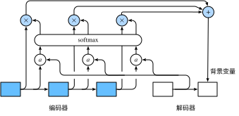

在“编码器—解码器（seq2seq）”一节里，解码器在各个时间步依赖相同的背景变量来获取输入序列信息。当编码器为循环神经网络时，背景变量来自它最终时间步的隐藏状态。
现在，让我们再次思考那一节提到的翻译例子：输入为英语序列“They”“are”“watching”“.”，输出为法语序列“Ils”“regardent”“.”。不难想到，解码器在生成输出序列中的每一个词时可能只需利用输入序列某一部分的信息。例如，在输出序列的时间步1，解码器可以主要依赖“They”“are”的信息来生成“Ils”，在时间步2则主要使用来自“watching”的编码信息生成“regardent”，最后在时间步3则直接映射句号“.”。这看上去就像是在解码器的每一时间步对输入序列中不同时间步的表征或编码信息分配不同的注意力一样。这也是注意力机制的由来 [1]。
仍然以循环神经网络为例，注意力机制通过对编码器所有时间步的隐藏状态做加权平均来得到背景变量。解码器在每一时间步调整这些权重，即注意力权重，从而能够在不同时间步分别关注输入序列中的不同部分并编码进相应时间步的背景变量。本节我们将讨论注意力机制是怎么工作的。
在“编码器—解码器（seq2seq）”一节里我们区分了输入序列或编码器的索引$t$与输出序列或解码器的索引$t'$。该节中，解码器在时间步$t'$的隐藏状态$\boldsymbol{s}{t'} = g(\boldsymbol{y}{t'-1}, \boldsymbol{c}, \boldsymbol{s}{t'-1})$，其中$\boldsymbol{y}{t'-1}$是上一时间步$t'-1$的输出$y_{t'-1}$的表征，且任一时间步$t'$使用相同的背景变量$\boldsymbol{c}$。但在注意力机制中，解码器的每一时间步将使用可变的背景变量。记$\boldsymbol{c}_{t'}$是解码器在时间步$t'$的背景变量，那么解码器在该时间步的隐藏状态可以改写为
$$\boldsymbol{s}{t'} = g(\boldsymbol{y}{t'-1}, \boldsymbol{c}{t'}, \boldsymbol{s}{t'-1}).$$
这里的关键是如何计算背景变量$\boldsymbol{c}{t'}$和如何利用它来更新隐藏状态$\boldsymbol{s}{t'}$。下面将分别描述这两个关键点。
我们先描述第一个关键点，即计算背景变量。图10.12描绘了注意力机制如何为解码器在时间步2计算背景变量。首先，函数$a$根据解码器在时间步1的隐藏状态和编码器在各个时间步的隐藏状态计算softmax运算的输入。softmax运算输出概率分布并对编码器各个时间步的隐藏状态做加权平均，从而得到背景变量。

具体来说，令编码器在时间步$t$的隐藏状态为$\boldsymbol{h}_t$，且总时间步数为$T$。那么解码器在时间步$t'$的背景变量为所有编码器隐藏状态的加权平均：
$$\boldsymbol{c}{t'} = \sum{t=1}^T \alpha_{t' t} \boldsymbol{h}_t,$$
其中给定$t'$时，权重$\alpha_{t' t}$在$t=1,\ldots,T$的值是一个概率分布。为了得到概率分布，我们可以使用softmax运算:
$$\alpha_{t' t} = \frac{\exp(e_{t' t})}{ \sum_{k=1}^T \exp(e_{t' k}) },\quad t=1,\ldots,T.$$
现在，我们需要定义如何计算上式中softmax运算的输入$e_{t' t}$。由于$e_{t' t}$同时取决于解码器的时间步$t'$和编码器的时间步$t$，我们不妨以解码器在时间步$t'-1$的隐藏状态$\boldsymbol{s}{t' - 1}$与编码器在时间步$t$的隐藏状态$\boldsymbol{h}_t$为输入，并通过函数$a$计算$e{t' t}$：
$$e_{t' t} = a(\boldsymbol{s}_{t' - 1}, \boldsymbol{h}_t).$$
这里函数$a$有多种选择，如果两个输入向量长度相同，一个简单的选择是计算它们的内积$a(\boldsymbol{s}, \boldsymbol{h})=\boldsymbol{s}^\top \boldsymbol{h}$。而最早提出注意力机制的论文则将输入连结后通过含单隐藏层的多层感知机变换 [1]：
$$a(\boldsymbol{s}, \boldsymbol{h}) = \boldsymbol{v}^\top \tanh(\boldsymbol{W}_s \boldsymbol{s} + \boldsymbol{W}_h \boldsymbol{h}),$$
其中$\boldsymbol{v}$、$\boldsymbol{W}_s$、$\boldsymbol{W}_h$都是可以学习的模型参数。
我们还可以对注意力机制采用更高效的矢量化计算。广义上，注意力机制的输入包括查询项以及一一对应的键项和值项，其中值项是需要加权平均的一组项。在加权平均中，值项的权重来自查询项以及与该值项对应的键项的计算。
在上面的例子中，查询项为解码器的隐藏状态，键项和值项均为编码器的隐藏状态。 让我们考虑一个常见的简单情形，即编码器和解码器的隐藏单元个数均为$h$，且函数$a(\boldsymbol{s}, \boldsymbol{h})=\boldsymbol{s}^\top \boldsymbol{h}$。假设我们希望根据解码器单个隐藏状态$\boldsymbol{s}{t' - 1} \in \mathbb{R}^{h}$和编码器所有隐藏状态$\boldsymbol{h}_t \in \mathbb{R}^{h}, t = 1,\ldots,T$来计算背景向量$\boldsymbol{c}{t'}\in \mathbb{R}^{h}$。 我们可以将查询项矩阵$\boldsymbol{Q} \in \mathbb{R}^{1 \times h}$设为$\boldsymbol{s}_{t' - 1}^\top$，并令键项矩阵$\boldsymbol{K} \in \mathbb{R}^{T \times h}$和值项矩阵$\boldsymbol{V} \in \mathbb{R}^{T \times h}$相同且第$t$行均为$\boldsymbol{h}_t^\top$。此时，我们只需要通过矢量化计算
$$\text{softmax}(\boldsymbol{Q}\boldsymbol{K}^\top)\boldsymbol{V}$$
即可算出转置后的背景向量$\boldsymbol{c}_{t'}^\top$。当查询项矩阵$\boldsymbol{Q}$的行数为$n$时，上式将得到$n$行的输出矩阵。输出矩阵与查询项矩阵在相同行上一一对应。
现在我们描述第二个关键点，即更新隐藏状态。以门控循环单元为例，在解码器中我们可以对“门控循环单元（GRU）”一节中门控循环单元的设计稍作修改，从而变换上一时间步$t'-1$的输出$\boldsymbol{y}{t'-1}$、隐藏状态$\boldsymbol{s}{t'-1}$和当前时间步$t'$的含注意力机制的背景变量$\boldsymbol{c}_{t'}$ [1]。 解码器在时间步$t'$的隐藏状态为
$$\boldsymbol{s}{t'} = \boldsymbol{z}{t'} \odot \boldsymbol{s}{t'-1} + (1 - \boldsymbol{z}{t'}) \odot \tilde{\boldsymbol{s}}_{t'},$$
其中的重置门、更新门和候选隐藏状态分别为
$$ \begin{aligned} \boldsymbol{r}{t'} &= \sigma(\boldsymbol{W}{yr} \boldsymbol{y}{t'-1} + \boldsymbol{W}{sr} \boldsymbol{s}{t' - 1} + \boldsymbol{W}{cr} \boldsymbol{c}{t'} + \boldsymbol{b}_r),\ \boldsymbol{z}{t'} &= \sigma(\boldsymbol{W}{yz} \boldsymbol{y}{t'-1} + \boldsymbol{W}{sz} \boldsymbol{s}{t' - 1} + \boldsymbol{W}{cz} \boldsymbol{c}{t'} + \boldsymbol{b}z),\ \tilde{\boldsymbol{s}}{t'} &= \text{tanh}(\boldsymbol{W}{ys} \boldsymbol{y}{t'-1} + \boldsymbol{W}{ss} (\boldsymbol{s}{t' - 1} \odot \boldsymbol{r}{t'}) + \boldsymbol{W}{cs} \boldsymbol{c}_{t'} + \boldsymbol{b}_s), \end{aligned} $$
其中含下标的$\boldsymbol{W}$和$\boldsymbol{b}$分别为门控循环单元的权重参数和偏差参数。
本质上，注意力机制能够为表征中较有价值的部分分配较多的计算资源。这个有趣的想法自提出后得到了快速发展，特别是启发了依靠注意力机制来编码输入序列并解码出输出序列的变换器（Transformer）模型的设计 [2]。变换器抛弃了卷积神经网络和循环神经网络的架构。它在计算效率上比基于循环神经网络的编码器—解码器模型通常更具明显优势。含注意力机制的变换器的编码结构在后来的BERT预训练模型中得以应用并令后者大放异彩：微调后的模型在多达11项自然语言处理任务中取得了当时最先进的结果 [3]。不久后，同样是基于变换器设计的GPT-2模型于新收集的语料数据集预训练后，在7个未参与训练的语言模型数据集上均取得了当时最先进的结果 [4]。除了自然语言处理领域，注意力机制还被广泛用于图像分类、自动图像描述、唇语解读以及语音识别。
基于本节的模型设计，为什么不可以将解码器在不同时间步的隐藏状态$\boldsymbol{s}{t' - 1}^\top \in \mathbb{R}^{1 \times h}, t' \in 1, \ldots, T'$连结成查询项矩阵$\boldsymbol{Q} \in \mathbb{R}^{T' \times h}$，从而同时计算不同时间步的含注意力机制的背景变量$\boldsymbol{c}{t'}^\top, t' \in 1, \ldots, T'$？
不修改“门控循环单元（GRU）”一节中的gru函数，应如何用它实现本节介绍的解码器？
[1] Bahdanau, D., Cho, K., & Bengio, Y. (2014). Neural machine translation by jointly learning to align and translate. arXiv preprint arXiv:1409.0473.
[2] Vaswani, A., Shazeer, N., Parmar, N., Uszkoreit, J., Jones, L., Gomez, A. N., ... & Polosukhin, I. (2017). Attention is all you need. In Advances in Neural Information Processing Systems (pp. 5998-6008).
[3] Devlin, J., Chang, M. W., Lee, K., & Toutanova, K. (2018). Bert: Pre-training of deep bidirectional transformers for language understanding. arXiv preprint arXiv:1810.04805.
[4] Radford, A., Wu, J., Child, R., Luan, D., Amodei, D., Sutskever I. (2019). Language Models are Unsupervised Multitask Learners. OpenAI.